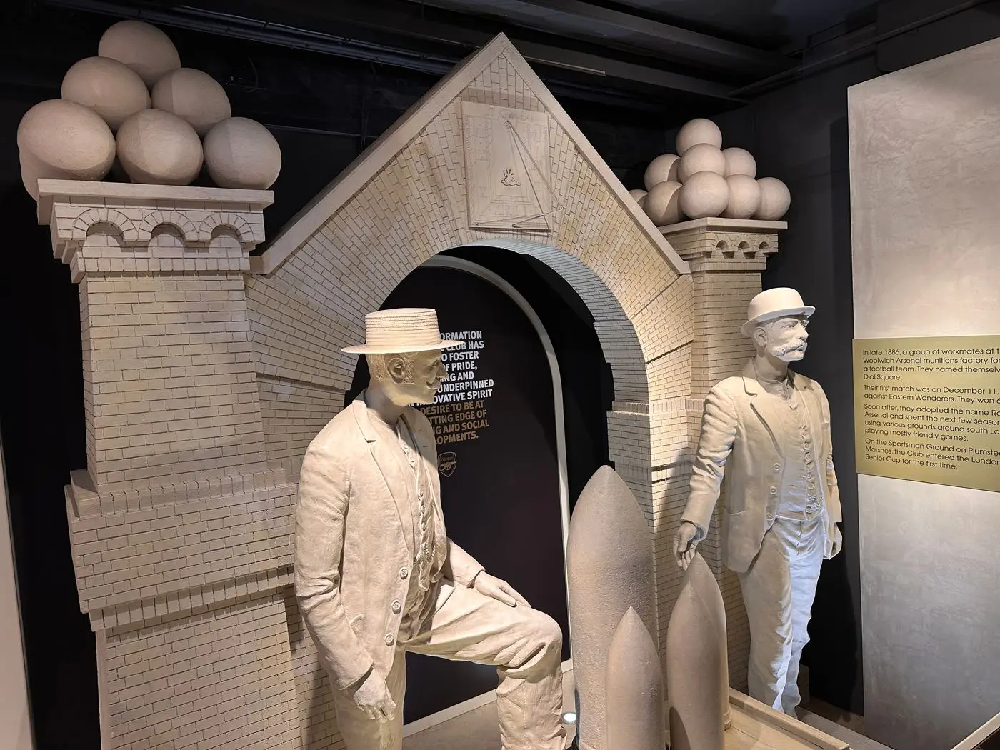

Desember 1886
Dial Square
Sekelompok pekerja yang dipimpin David Danskin, seorang Skotlandia, mengumpulkan uang untuk membeli bola. Mereka menamai tim sesuai nama bengkel mereka: Dial Square. Laga pertama dimainkan pada 11 Desember 1886 di Isle of Dogs dan dimenangi 6–0 atas Eastern Wanderers.
Tak lama kemudian, nama klub berganti menjadi Royal Arsenal. Dua pemain asal Nottingham Forest, Fred Beardsley dan Morris Bates, meminta bantuan klub lamanya — Forest mengirim satu set seragam merah dan sebuah bola. Dari sinilah warna merah Arsenal berasal.
